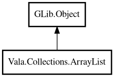

ArrayList
Object Hierarchy:

Description:
public class ArrayList<T> : Object
A dynamic array-backed list that grows automatically as elements are added.
ArrayList provides O(1) indexed access and amortized O(1) append. Inspired by Java's ArrayList, Go's slice, and Python's list.
For element comparison in methods like contains() and indexOf(), pass an equality function to the constructor. For string lists, use
GLib.str_equal.
Example:
var list = new ArrayList<string> (GLib.str_equal);
list.add ("hello");
list.add ("world");
assert (list.size () == 2);
assert (list.get (0) == "hello");
assert (list.contains ("hello"));
var filtered = list.filter ((s) => { return s == "hello"; });
assert (filtered.size () == 1);
Content:
Creation methods:
Methods:
- public T @get (int index)
Returns the element at the specified index. Returns null if the index
is out of bounds.
- public bool @set (int index, owned T element)
Replaces the element at the specified index. Returns false if the
index is out of bounds.
- public void add (owned T element)
Adds an element to the end of the list.
- public void addAll (ArrayList<T> other)
Adds all elements from another ArrayList to the end of this list.
- public void clear ()
Removes all elements from the list.
- public bool contains (T element)
Returns whether the list contains the specified element. Uses the
equality function provided in the constructor, or pointer equality if none was provided.
- public ArrayList<T> filter (owned PredicateFunc<T> func)
Returns a new ArrayList containing only the elements that match the
given predicate.
- public Optional<T> find (owned PredicateFunc<T> func)
Returns an Optional containing the first element that matches the
given predicate. Returns an empty Optional if no element matches.
- public void forEach (owned ConsumerFunc<T> func)
Applies the given function to each element in the list.
- public int indexOf (T element)
Returns the index of the first occurrence of the specified element.
Returns -1 if the element is not found. Uses the equality function provided in the constructor, or pointer equality if none was
provided.
- public bool isEmpty ()
Returns whether the list is empty.
- public ArrayList<U> map<U> (owned MapFunc<T,U> func)
Returns a new ArrayList containing the results of applying the given
function to each element.
- public U reduce<U> (U initial, owned ReduceFunc<T,U> func)
Reduces the list to a single value by applying the given function to
each element, accumulating the result from the initial value.
- public T removeAt (int index)
Removes and returns the element at the specified index. Returns null
if the index is out of bounds.
- public uint size ()
Returns the number of elements in the list.
- public void sort (owned ComparatorFunc<T> func)
Sorts the list in-place using the provided comparison function.
- public ArrayList<T> subList (int from, int to)
Returns a new ArrayList containing elements from index from
(inclusive) to index to (exclusive). If the indices are out of bounds, they are clamped to valid range. If from >= to
, returns an empty list.
- public T[] toArray ()
Returns the elements as a native array.
Inherited Members:
All known members inherited from class GLib.Object
- @get
- @new
- @ref
- @set
- add_toggle_ref
- add_weak_pointer
- bind_property
- connect
- constructed
- disconnect
- dispose
- dup_data
- dup_qdata
- force_floating
- freeze_notify
- get_class
- get_data
- get_property
- get_qdata
- get_type
- getv
- interface_find_property
- interface_install_property
- interface_list_properties
- is_floating
- new_valist
- new_with_properties
- newv
- notify
- notify_property
- ref_count
- ref_sink
- remove_toggle_ref
- remove_weak_pointer
- replace_data
- replace_qdata
- set_data
- set_data_full
- set_property
- set_qdata
- set_qdata_full
- set_valist
- setv
- steal_data
- steal_qdata
- thaw_notify
- unref
- watch_closure
- weak_ref
- weak_unref